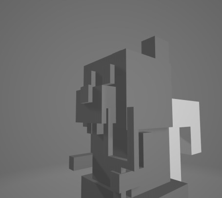
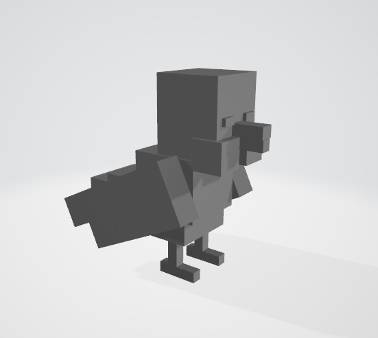
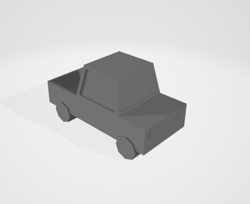
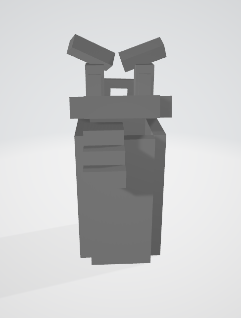

Embarque nas aventuras desse jogo de Tower Defense, onde você ajuda os defensores da floresta a proteger a Árvore Anciã dos Irmãos Topadas.
Animais vivem em harmonia e tranquilidade em uma linda floresta que é protegida pela Árvore Anciã, mas tudo começou a mudar quando uma
onda de resíduos poluentes começaram a poluir a floresta e quererem destruir a Árvore Anciã, tendo assim, que os animais se reunem para proteger a floresta.
O jogo é um Tower defense no estilo de que tem um caminho que deve ser protegido pelos animais que podem
ser posicionados e aprimorados para defender a Grande Árvore dos inimigos, onde deve se usar de bom posicionamento para garantir a melhor defesa do caminho.
Este guerreiro das árvores pode não ser muito forte, porém compensa na sua agilidade de combate. Atira nozes em qualquer um que ameaçar a floresta! Contudo, ninguém sabe de onde ele tira todas elas...
É um pássaro? É um avião? Não! É um feroz guerreiro alado, que atira suas penas com uma precisão de dar inveja! Porém, não pode atacar frequentemente, pos arrancar as penas dói!
Com tração nas quatro rodas e pura malícia de combustível, o velho Calhambé está pronto para passar por cima de tudo em seu caminho!
Pulando e rolando feito um louco, Lixaréu gosta de sujar tudo e todos. Não para um segundo de se mover, mesmo se estiver cansado.

Programação:
Carlos Mário (carlos.almeida@nave.org.br)
Eduardo Moraes:
(eduardo.moraes@nave.org.br)
Guilherme Cândido:
(guilherme.candido@nave.org.br)
Ibson luiz:
(Ibson.candido@nave.org.br)
Matheus Ferreira:
(matheus.ferreira@nave.org.br)
Saulo Costa
(saulo.costa@nave.org.br)
Multimidia:
André luis:
(andre.cardoso@nave.org.br)
Elzo Íthalo:
(elzo.ithallo@nave.org.br)
João Marinho:
(joao.marinho@nave.org.br)
Sara Amanda:
(sara.amanda@nave.org.br)